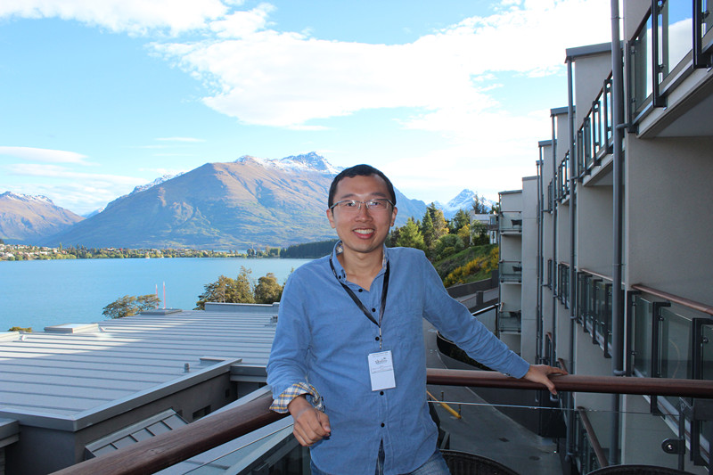

|  |
TAN, Tian HuatData Scientist / Machine Learning Engineer
|
Announcement
Welcome to my academic page! From Sept 2016, I have moved to industry from academia.Please refer to my linkedin page for updated information on what I have been working on in the industry :)
Education
- 2009-2013, PhD, NGS (School of Computing), NUS (supervisor: Prof. Jin Song Dong) (CAP 5.0/5.0)
- 2006-2009, Bachelor of Computer Science, School of Computing, NUS
Research Interests
My current research interests include, but not necessary limited to:
- Artificial Intellligence
- Machine Learning
- Data Science
Educational Awards
- 2012-2013 Research Achievement Award, National University of Singapore
- 2008-2009 Max Lewis Scholarship, National University of Singapore
- 2007-2008 Dean's List of School of Computing, National University of Singapore
- 2006-2007 Dean's List of School of Computing, National University of Singapore
Professional Activities
Programme Committee Member of
Publication Chair of
Publications
My research work has been published in some internationally highly reputable journals (e.g., TIFS 2017), and conferences (e.g., ICSE 2017, ASE 2016, ICSE 2016, ISSTA 2015, ICSE 2014, FM 2014, WWW 2014). Below are the details of them. For each publication, I have attached the paper (pdf), the bibliography (bib), and some with presentation slides (slides) if available.Patents
- [US Patent 2018] Eugene Aseev, Stanislav S. Protasov, Tian Huat Tan, Serguei M . Beloussov. System and Method for Automatic Software Installation and Configuration. U.S. Patent Application No. 15/895,034. (Filed on February 13, 2018) [link]
Journals
- [TIFS 2017] Guozhu Meng, Yinxing Xue, Yang Liu, Tian Huat Tan, Hongxu Chen, Jie Zhang and Jun Sun. Auditing Anti-Malware Tools by Evolving Android Malware and Dynamic Loading Technique. Transactions on Information Forensics & Security. [pdf, bib]
- [ASOC 2016] Yinxing Xue, Jinghui Zhong, Tian Huat Tan, Yang Liu, Wentong Cai, Manman Chen and Jun Sun. IBED: Combining IBEA and DE for optimal feature selection in software product line engineering. Applied Soft Computing. [pdf, bib]
Conferences
- [ICSE 2017] Tian Huat Tan, Yinxing Xue, Manman Chen, Shuang Liu, Yi Yu and Jun Sun. JSFox: Integrating Static and Dynamic Type Analysis of JavaScript Programs. The 39th International Conference on Software Engineering (ICSE 2017), Argentina, May 20th - 28th, 2017. [pdf, bib, postal]
- [ASE 2016] Xin Peng, Jingxiao Gu, Tian Huat Tan, Jun Sun, Yijun Yu, Bashar Nuseibeh and Wenyu Zhao. CrowdService: Optimizing Mobile Crowdsourcing and Service Composition. The 31st IEEE/ACM International Conference on Automated Software Engineering (ASE 2016), Singapore, September 3rd - 7th, 2016. [pdf, bib]
- [ICFEM 2016] Truong Khanh Nguyen, Tian Huat Tan, Jun Sun, Jiaying Li, Yang Liu, Manman Chen and Jin Song Dong. Scaling BDD-based Timed Verification with Simulation Reduction. The 18th International Conference on Formal Engineering Methods (ICFEM 2016), Tokyo, Japan, November 14th - 18th, 2016. [pdf, bib]
- [ICFEM 2016] Manman Chen, Tian Huat Tan, Jun Sun, Jingyi Wang, Yang Liu, Jing Sun and Jin Song Dong. Service Adaptation with Probabilistic Partial Models. The 18th International Conference on Formal Engineering Methods (ICFEM 2016), Tokyo, Japan, November 14th - 18th, 2016. [pdf, bib]
- [ICSE 2016] Tian Huat Tan, Manman Chen, Jun Sun, Yang Liu, Étienne André, Yinxing Xue and Jin Song Dong. Optimizing Selection of Competing Services with Probabilistic Hierarchical Refinement. The 38th International Conference on Software Engineering (ICSE 2016), Austin, TX, May 14th - 22nd, 2016. (Acceptance rate: 19%). [pdf, bib, slides]
- [ISSTA 2015] Tian Huat Tan, Yinxing Xue, Manman Chen, Jun Sun, Yang Liu and Jin Song Dong. Optimizing Selection of Competing Features via Feedback-directed Evolutionary Algorithms. International Symposium on Software Testing and Analysis (ISSTA 2015), Baltimore, Maryland, July 14th - July 17th, 2015. (Acceptance rate: 27.7%). [pdf, bib, slides]
- [AsiaCCS 2015] Junjie Wang, Yinxing Xue, Yang Liu and Tian Huat Tan. JSDC: A Hybrid Approach for JavaScript Malware Detection and Classification. The 10th ACM Symposium on Information, Computer and Communications Security (AsiaCCS 2015), Singapore. April 14th - April 17th, 2015. [pdf, bib, slides]
- [ICSE 2014] Manman Chen, Tian Huat Tan, Jun Sun, Yang Liu and Jin Song Dong. VeriWS: A Tool for Verification of Combined Functional and Non-functional Requirements of Web Service Composition. The 36th International Conference on Software Engineering (ICSE 2014), Hyderabad. India. May 31th - June 7th, 2014. [pdf, bib, slides]
- [FM 2014] Yi Li, Tian Huat Tan, and Marsha Chechik. Management of Time Requirements in Component-based Systems. The 19th International Symposium on Formal Methods (FM 2014). Singapore, May 12th - May 16th, 2014. (Acceptance rate: 28%). [pdf, bib, slides]
- [WWW 2014] Tian Huat Tan, Manman Chen, Étienne André, Jun Sun, Yang Liu and Jin Song Dong. Automated Runtime Recovery for QoS-based Service Composition. The 23rd International World Wide Web Conference (WWW 2014). Seoul, Korea, April 7th - April 11th, 2014. (Acceptance rate: 12.9%). [pdf, bib, slides]
- [ICFEM 2013] Manman Chen, Tian Huat Tan, Yang Liu and Jun Sun. Verification of Functional and Non-functional Requirements of Web Service Composition. The 15th International Conference on Formal Engineering Methods (ICFEM 2013), Queenstown, New Zealand, Oct 29th - Nov 1st, 2013. [pdf, bib, slides]
- [ICSE 2013] Tian Huat Tan, Etienne Andre, Jun Sun, Yang Liu, Jin Song Dong and Manman Chen. Dynamic Synthesis of Local Time Requirement for Service Composition. The 35th International Conference on Software Engineering (ICSE 2013), San Francisco, CA, USA, May 18th - 26th, 2013. (Acceptance rate: 18%) [pdf, extended version, bib, slides]
- [ICFEM 2011] Tian Huat Tan, Yang Liu, Jun Sun and Jin Song Dong. Verification of Computation Orchestration System with Compositional Partial Order Reduction. The 13th International Conference on Formal Engineering Methods (ICFEM 2011), pages 98-114, Durham, United Kingdom, October 25th - 28th, 2011. [pdf, bib, slides]
- [APSEC 2010] Jun Sun, Yang Liu, Jin Song Dong, Geguang Pu and Tian Huat Tan. Model-based Methods for Linking Web Service Choreography and Orchestration. The 17th Asia Pacific Software Engineering Conference (APSEC 2010), pages 166-175, Sydney, Australia, Nov 30th - Dec 3rd, 2010. [pdf, bib, slides]
- [SSIRI 2010] Tian Huat Tan. Towards verification of a service orchestration language. The 4th International Conference on Secure Software Integration and Reliability Improvement (SSIRI 2010), pages 36-37, Singapore, June 9th - 11th, 2010. [pdf, bib, slides]
Industry Experience
Please refer to my linkedin page for updated information.Useful Links
- Sublime Text 3 Cheat Sheet for Windows - Windows Sublime Text Cheat Sheet
- Sublime Text 3 Cheat Sheet for Mac - Mac Sublime Text Cheat Sheet
- Convert your excel table to latex - Excel2Latex
- Identify the latex symbols by drawing - Detexify
- Some latex tricks that might be helpful, especially for saving space.